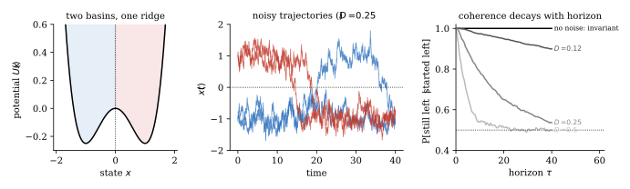
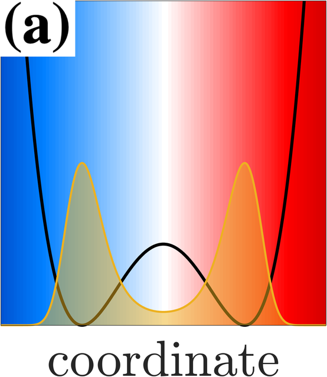
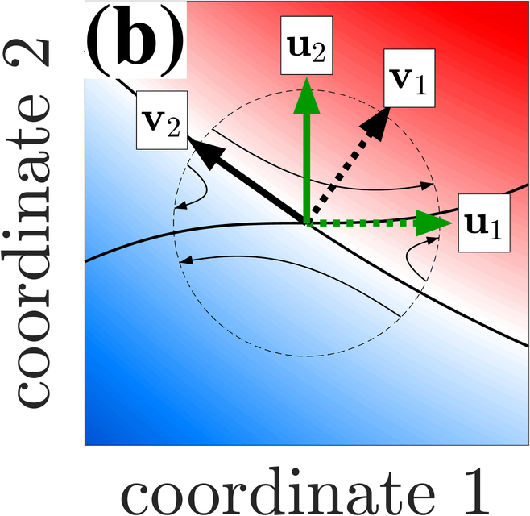
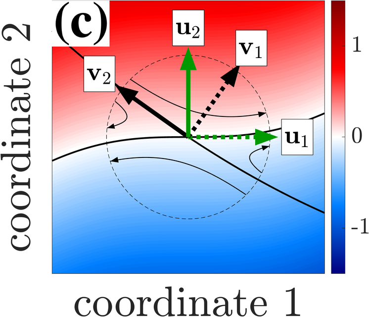
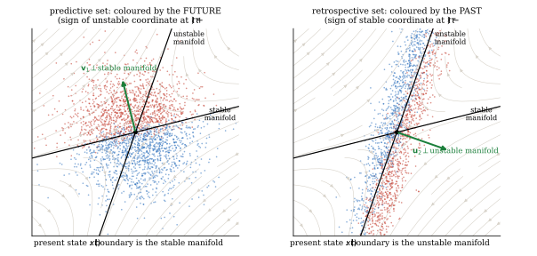
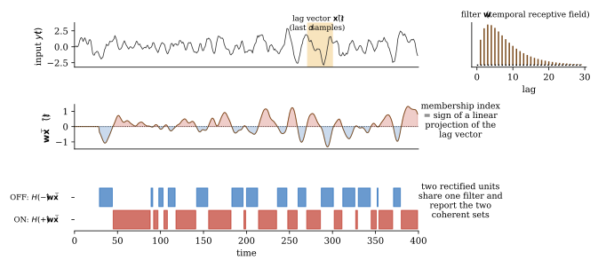

Introduction — Why coherent sets?
This block is about concepts, not calculations. It sets out what the paper is claiming and why anyone would want to claim it, so that the operators, adjoints and singular vectors of Blocks 0–D have a purpose before they have a definition. The questions are conceptual; answer them in words.
1. A sensory stream is a trajectory
Everything a sensory neuron will ever see is a time series: a luminance at a photoreceptor, an odorant concentration at a receptor, a summed synaptic current. The paper's first move is to say what kind of object such a series is. It is not a sequence of unrelated samples. It is the observation, through some measurement, of a state $x(t)$ that evolves according to dynamics with noise: the world (a moving scene, a turbulent plume) plus the sensor. The stimulus at one moment constrains the stimulus at the next, and the constraint is exactly the dynamics.
This is a stronger assumption than "stimuli are correlated in time". It says the correlations come from a state moving through a state space, and it makes the state space, not the time series, the natural place to ask what a neuron should compute. The classic answer from efficient and predictive coding is: extract from the recent past whatever is most informative about the near future. The paper turns that answer into geometry. The most predictable thing about a noisy trajectory is not where it will be, but which region it will be in.
Q1 Why does the paper insist on modelling the stimulus as a trajectory of a stochastic dynamical system, rather than, say, as a stationary Gaussian process with some autocorrelation function? What can be said in the first description that cannot even be phrased in the second?
Answer
A stationary process with a given autocorrelation is a statement about the time series alone. A dynamical system is a statement about a state space with a flow on it, and only in the second picture do notions like "region of state space", "which way is the trajectory heading", "basin", "saddle" and "the two futures that are possible from here" exist. Coherent sets are regions of state space, and prediction is framed as classifying the present state by its future region. None of that can be phrased in terms of an autocorrelation function. For the linear Gaussian case the two descriptions carry the same information (Block C shows the lag-vector reconstruction), which is why the paper can compute anything at all; but the interpretation of what is computed lives entirely in the state-space picture, and the extension to nonlinear stimuli exists only there.
2. Invariant sets, and what replaces them when there is noise
For a deterministic system the coarsest useful description is: which invariant set is the trajectory in? An invariant set is a region trajectories never leave, such as a basin of attraction. Membership is a single bit, it never changes, and it is perfectly predictive: if you are in the left basin now, you will be in the left basin forever. The boundaries of invariant sets are the ridges between basins, and in higher dimensions the stable manifolds of saddles.
Noise destroys this. Any region will eventually be left, so nothing is invariant except the whole space, and "which basin" becomes a question with an expiry date. What survives is a graded version: over a horizon $\tau$, some regions leak far less than others. The paper's definition (Section 2) is that a pair of regions $(A,B)$ is coherent if a trajectory that starts in $A$ at time $t$ is very likely to be found in $B$ at time $t+\tau$. Invariant sets are the limit of noise to zero and $\tau$ to infinity; coherent sets are what the concept degrades into gracefully when neither limit applies.

code/intro_figures.py.


Q2 In the deterministic double well, what is the one-bit description of the state, why is it perfectly predictive, and where does its boundary sit? Now add noise. Say precisely which of those three properties fails and which is retained in weakened form.
Answer
The bit is "left well or right well"; it is perfectly predictive because the wells are invariant, so the bit never changes; and the boundary is the ridge at $x=0$, the point from which trajectories fall either way. With noise, invariance fails: trajectories hop, so the bit has a lifetime rather than being permanent. What is retained is that over horizons shorter than the hopping time the bit is nearly conserved, with a leakage probability that grows with the horizon. The boundary is retained too, in a weakened sense: a cut at the ridge minimises leakage, and any other cut leaks more, because states near the ridge are the ones with an uncertain future and the ridge is where the density of trajectories crossing per unit time is smallest. So "invariant" degrades to "coherent over horizon $\tau$", "never changes" degrades to "changes with small probability per unit time", and "boundary at the ridge" survives as "the least leaky cut".
Q3 Coherence is defined with a horizon $\tau$. Describe what the best coherent pair looks like as $\tau\to0$ and as $\tau\to\infty$, and why neither limit is useful. What sets a sensible $\tau$ for a sensory neuron?
Answer
As $\tau\to0$ nothing has moved, so every pair $(A,A)$ is perfectly coherent and the criterion selects nothing; coherence is trivially achieved and carries no information about the dynamics. As $\tau\to\infty$ a noisy system forgets its initial condition, so every region ends up spread according to the stationary distribution, and no pair is coherent except the trivial pair (everything, everything). The interesting structure lives at intermediate horizons, comparable to the time trajectories take to cross from one region to another but shorter than the time they take to hop back. For a neuron the horizon is set by what the downstream computation needs to anticipate: a reaction time, the time to the next saccade, the time for an odour plume to arrive. The paper leaves $\tau$ as a parameter and notes in Section 3 that the singular vectors change with it; Block C, Problem 12 examines the large-$\tau$ limit, where the predictive filter aligns with the unstable direction of the saddle.
3. Why a neuron would want a membership index
Suppose a neuron could compute anything it liked from the recent stimulus. Why would "which coherent set am I in" be the thing to compute? Three reasons, all of which the paper leans on.
It is what is predictable. Under noise the exact future state is not predictable, but the future region is, and the coherent set is by construction the region whose future is most certain. A membership index is the piece of the future that the present actually determines.
It is robust. Two states in the same coherent set have the same future to within the leakage. A neuron that reports membership is invariant to everything that does not change the outcome, which is what one wants from a feature.
It is one bit, and one bit is what a spike is. A neuron with a threshold outputs sign of something. The paper's claim is that the "something" is a subdominant singular function, whose sign is a coherent-set membership index (Section 2, Eq. 9). Rectification, usually explained as a metabolic or biophysical constraint, becomes the computation itself: an ON cell and an OFF cell are the two halves of one partition of stimulus space.
Q4 The retina has ON and OFF bipolar and ganglion cells that respond to luminance increments and decrements respectively, with mirror-image temporal filters. Explain how the paper reinterprets this pair, and what it would predict for any other sensory system.
Answer
An ON cell computes $H(+\mathbf w^\top\hat{\mathbf x})$ and an OFF cell $H(-\mathbf w^\top\hat{\mathbf x})$ for the same filter $\mathbf w$: they are the two half-spaces $\{v>0\}$ and $\{v<0\}$ of one singular function $v$, i.e. the two members of one coherent-set partition. "Increment versus decrement" is what that partition looks like for the particular dynamics of natural luminance signals, where the subdominant singular vector turns out to be a smoothed temporal derivative (the paper's Fig. 2). The general prediction is that wherever a sensory pathway splits into complementary rectified channels with the same filter and opposite sign, the pair is reporting membership in the two coherent sets of the input dynamics, and the filter should be a singular vector of the lagged covariance structure of the input. The prediction is testable because the filter can be computed from the input statistics alone, without reference to the biology.
4. Prediction and retrospection
A coherent pair has two members that live at different times: $A$ at $t$ and $B$ at $t+\tau$. Being in $A$ now tells you that you will be in $B$; being in $B$ now tells you that you were in $A$. So every coherent pair supports two different one-bit computations, one looking forward and one looking back, and they are different functions of the present state. The paper calls neurons that compute the first predictive and the second retrospective.
The cleanest place to see the difference is a saddle, which is where futures diverge and pasts converge. Two trajectories that start on opposite sides of the stable manifold end up far apart, so the stable manifold is the boundary of the predictive sets. Two trajectories that arrive on opposite sides of the unstable manifold came from far apart, so the unstable manifold is the boundary of the retrospective sets. The figure below shows both colourings on simulated trajectories.

code/intro_figures.py.Q5 Without equations, explain why the predictive boundary at a saddle is the stable manifold and the retrospective boundary is the unstable one. Then say which component of the state each neuron's filter must be sensitive to, and why the paper tests real neurons by comparing their temporal filters with growing and decaying exponentials.
Answer
Along the stable manifold trajectories are drawn toward the saddle and then expelled along the unstable direction; on which side of the unstable direction they are expelled is decided by the sign of their unstable component, and the set of states with zero unstable component is exactly the stable manifold. So the future is decided by which side of the stable manifold you are on, and the predictive filter must read out the unstable component, which grows like $e^{+\lambda t}$. Reversing the argument in time: which side of the stable direction a trajectory came from is recorded in the sign of its stable component, which is decaying like $e^{-\lambda t}$ and has not yet vanished; the states with zero stable component form the unstable manifold. So the retrospective filter reads out the decaying component. In a lag-vector representation of a scalar signal a growing mode looks like an expanding exponential over the recent past and a decaying mode like a contracting one, so a filter that is orthogonal to the contracting exponential and aligned with the expanding one is reading the future (predictive), and the reverse pattern is reading the past (retrospective). That is the test the paper applies to bipolar, olfactory bulb and retinal ganglion cells in Section 5.
Q6 Why must predictive and retrospective indices be computed by different neurons? Under what condition on the dynamics would one neuron suffice, and why is that condition rarely met by sensory input?
Answer
They are different functions of the present state: at the saddle one is the sign of the unstable component and the other the sign of the stable component, with different boundaries and different filters, so a single linear-threshold unit cannot compute both. They coincide only when the dynamics look the same run backwards as forwards, i.e. when the process is reversible in the sense of detailed balance; then "where you are going" and "where you came from" are the same question and the two singular functions are the same (Block A, Problem 3; Block C, Problem 9). Sensory input is generated by processes with an arrow of time: a saddle passage, an object approaching, a plume arriving. Such dynamics are irreversible, the two questions have different answers, and the paper predicts two populations, which it identifies tentatively with tufted versus mitral cells in the olfactory bulb and non-lagged versus lagged cells in the LGN.
5. What a neuron would actually do
The mechanism the paper proposes is deliberately minimal. The neuron holds a short history of its input, the lag vector $\hat{\mathbf x}(t)$ of the last $d$ samples, which is a stand-in for the state (Section 3, Eq. 20). It takes a weighted sum with a stored filter $\mathbf w$, its temporal receptive field. It thresholds. The output is the membership index. Everything the theory has to say is about which $\mathbf w$: it should be a subdominant singular vector of the (whitened, finite-time) transition operator of the input dynamics, and for linear dynamics with Gaussian noise that is exactly right, not an approximation (Section 3).

code/intro_figures.py.The neuron has no access to the equations of the world. What it does have is the statistics of its own input over past experience, and Section 4 of the paper shows that the required filter is determined by two matrices of lagged second moments of the input, the same quantities that past–future canonical correlation analysis uses. Block D derives this and asks what is lost when the input is not linear.
Q7 A neuron cannot solve differential equations. What must it be able to estimate from its own input in order to find $\mathbf w$, what property of the input does that estimation require, and what is the cost when the true dynamics are nonlinear?
Answer
It needs the covariance of its lag vector with itself and with itself shifted by $\tau$: the instantaneous and lagged second moments $\Sigma_0$ and $\Sigma_\tau$ of Section 4, Eq. (23), which can be accumulated online by Hebbian-style averaging. From these the filter is an eigenvector of a product of the two (Eq. 24), and there are local circuits that compute such eigenvectors (Lipshutz et al. 2021). The estimation requires the input to be stationary over the averaging window, or at least locally stationary so that a forgetting factor tracks slow drift, and ergodic so that one neuron's experience stands in for the ensemble. When the true dynamics are nonlinear the lag vector is not a linear state and the best linear filter is not a singular function of the true operator; the neuron computes the best representable filter, which may or may not correspond to a coherent set of the world, and it has no internal way to check (Block D, Problems 13 and 15).
6. How the rest of the problem set gets there
To turn "coherent set" from a picture into something computable one needs, in order: an operator that moves observables forward in time and is linear even when the dynamics are not (Block 0); its adjoint with respect to the right inner product, which turns out to be the same operator for the time-reversed process, and the singular value decomposition that the adjoint makes possible (Block A on finite state spaces, Block B on continuous ones); the explicit solution for linear Gaussian dynamics, where the singular functions are linear and the whole computation collapses to a matrix problem (Block C); and the data-driven version that replaces the operator by lagged covariances of features, together with its limitations (Block D). Every one of those pieces exists to make one of the sentences in this introduction precise.
Q8 Sort the paper's main claims into mathematical results and empirical or interpretive hypotheses: (i) subdominant singular functions of the transfer operator identify the least leaky coherent pair; (ii) for Ornstein–Uhlenbeck dynamics those singular functions are linear in the state; (iii) neurons compute their sign; (iv) ON and OFF cells are the two halves of one partition; (v) tufted and mitral cells are predictive and retrospective populations. For each, say what would count as evidence against it.
Answer
(i) is a mathematical result from the coherent-set literature (Froyland and coworkers) with a caveat: singular functions give approximate maximisers of the leakage objective, and the sign cut is a heuristic that is exact only in special cases. Against it: a system where the sign cut of the subdominant singular function is far from the best partition. (ii) is a theorem for stable OU processes (the Supplement proves it) and an extrapolation for saddle-point OU, where there is no stationary density and the argument has a gap the paper itself notes (Block C, Problems 8 and 12). Against it: an explicit nonlinear singular function with a larger singular value in the saddle case. (iii) is a hypothesis about biology, supported by the shape of measured temporal filters matching data-driven singular vectors (Fig. 2). Against it: filters that are systematically not singular vectors of the input statistics, or that change with task in ways the input statistics do not. (iv) is an interpretation; it makes the testable prediction that ON and OFF filters are sign-reversed copies, which is roughly but not exactly true in real retinas. (v) is the most speculative, resting on the exponential-alignment test of Section 5 and on a functional dichotomy that has other explanations. Against it: populations whose filters do not segregate by alignment with growing versus decaying exponentials, or that do but without the predicted response-timing difference. Keeping these tiers separate is the reason the solutions in later blocks carry confidence tags.